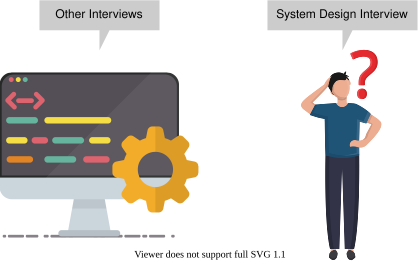
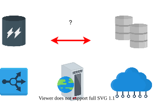

1. System Design Interviews
What Is a System Design Interview?
What Is a System Design Interview?
Learn about system design interviews (SDIs) and how to strategically approach them.
We'll cover the following
Our system design course is equally useful for people already working and those preparing for interviews. In this chapter, we highlight the different aspects of a system design interview (SDI) and some helpful tips for those who are preparing for an upcoming interview. We encourage learners to read this chapter even if they aren’t preparing for an interview because some of the topics covered in this chapter can be applied broadly.
How are SDIs different from other interviews?#
Just like with any other interview, we need to approach the systems design interviews strategically. SDIs are different from coding interviews. There’s rarely any coding required in this interview.

An SDI takes place at a much higher level of abstraction. We figure out the requirements and map them on to the computational components and the high-level communication protocols that connect these subsystems.
The final answer doesn’t matter. What matters is the process and the journey that a good applicant takes the interviewer through.
Note: As compared to coding problems in interviews, system design is more aligned with the tasks we’ll complete on our jobs.
How do we tackle a design question?#
Design questions are open ended, and they’re intentionally vague to start with. Such vagueness mimics the reality of modern day business.
Interviewers often ask about a well-known problem,—for example, designing WhatsApp. Now, a real WhatsApp application has numerous features, and including all of them as requirements for our WhatApp clone might not be a wise idea due to the following reasons:
- First, we’ll have limited time during the interview.
- Second, working with some core functionalities of the system should be enough to exhibit our problem-solving skills.
We can tell the interviewer that there are many other things that a real WhatsApp does that we don’t intend to include in our design. If the interviewer has any objections, we can change our plan of action accordingly.
Here are some best practices that we should follow during a system design interview:
-
An applicant should ask the right questions to solidify the requirements.
-
Applicants also need to scope the problem so that they’re able to make a good attempt at solving it within the limited time frame of the interview. SDIs are usually about 35 to 40 minutes long.
-
Communication with the interviewer is critical. It’s not a good idea to silently work on the design. Instead, we should engage with the interviewer to ensure that they understand our thought process.
Present the high-level design#
At a high level, components could be frontend, load balancers, caches, data processing, and so on. The system design tells us how these components fit together.
An architectural design often represents components as boxes. The arrows between these boxes represent who talks to whom and how the boxes or components fit together collectively.

We can draw a diagram like the one shown above for the given problem and present it to the interviewer.
Possible questions for every SDI#
SDIs often include questions related to how a design might evolve over time as some aspect of the system increases by some order of magnitude—for example, the number of users, the number of queries per second, and so on. It’s commonly believed in the systems community that when some aspect of the system increases by a factor of ten or more, the same design might not hold and might require change.
Designing and operating a bigger system requires careful thinking because designs often don’t linearly scale with increasing demands on the system.
Another question in an SDI might be related to why we don’t design a system that’s already capable of handling more work than necessary or predicted.
The design evolution of Google#
The design of the early version of Google Search may seem simplistic today, but it was quite sophisticated for its time. It also kept costs down, which was necessary for a startup like Google to stay afloat. The upshot is that whatever we do as designers have implications for the business and its customers. We need to meet or exceed customer needs by efficiently utilizing resources.
Design challenges#
Things will change, and things will break over time because of the following:
- There’s no single correct approach or solution to a design problem.
- A lot is predicated on the assumptions we make.
The responsibility of the designer#
As designers, we need to provide fault tolerance at the design level because almost all modern systems use off-the-shelf components, and there are millions of such components. So, something will always be breaking down, and we need to hide this undesirable reality from our customers.
Who gets a system design interview?#
Traditionally, mid-to-senior level candidates with more than two years of experience get at least one system design interview. For more senior applicants, two or three system design interviews are common.
Recently, large companies have also put forth system design questions to some junior candidates. It’s never too early to learn system design to grow or even expedite our careers.
Theory and practice#
Most of the theory of system design comes from the domain of distributed systems. Getting a refresher on these concepts is highly recommended. Google has an excellent course on distributed systems that we can use to refresh our knowledge of distributed systems concepts.
Distributed systems give us guideposts for mature software principles. These include the following:
- Robustness (the ability to maintain operations during a crisis)
- Scalability
- Availability
- Performance
- Extensibility
- Resiliency (the ability to return to normal operations over an acceptable period of time post disruption)
Such terminology also acts as a lingua franca between the interviewer and candidate.
As an example, we might say that we need to make a trade-off between availability and consistency when network components fail because the CAP theorem indicates that we can’t have both under network partitions. Such common language helps with communication and shows that we’re well versed in both theory and practice.
Remember: It’s a candidate’s job to exhibit their skills to the interviewer.
How to Prepare for Success
How to Prepare for Success
Get an overview of some interview preparation guidelines and materials.
We'll cover the following
Substantial preparation is necessary to increase our odds of getting the job we apply for.
Depending on a candidate’s seniority and proficiency, different candidates need different times for interview preparation.
For an average candidate, three to four months might be required to prepare for a system design interview.
This course#
This course helps readers learn or brush up on their system design skills. We’ve carefully curated some traditional and fresh design problems to cover the substantial depth and breadth of the system design.
The following activities might expedite the preparation and add variety and further depth to a candidate’s knowledge.
Technical blogs#
Many companies regularly publish the technical details of their significant work in the form of technical blogs.
Why are companies eager to share the technical details of their work?
Note: There’s a fine line between what can be held back by a company due to a competitive edge and what can be made public.
We can study these blogs to get insight into what challenges or problems the company faced and what changes they made in the design to cope with these challenges.
Note: Staying informed about these innovations is important for professionals, and it’s even more crucial for an applicant.
Some important technical blogs are Engineering at Meta, Meta Research, AWS Architecture Blog, Amazon Science Blog, Netflix TechBlog, Google Research, Engineering at Quora, Uber Engineering Blog, Databricks Blog, Pinterest Engineering, BlackRock Engineering, Lyft Engineering, and Salesforce Engineering.
Note: We should always take non-peer-reviewed material with a grain of salt. Think about what blogs say critically and with technical acumen to decide if what they say makes sense or not. If it doesn’t make sense, that could be an excellent opportunity to discuss the issue with peers.
Ask why a system works#
By asking themselves the right questions, candidates can think through dense and ambiguous situations.
- Learn how popular applications work at a high level—for example, Instagram, Twitter, and so on.
- Start to understand and ask why some component was used instead of another—for example, Firebase versus SQL.
- Build serious side projects. Start with a simple product and then improve and refine it.
- Build a system from scratch, and get familiar with all the processes and details of its construction.
We can clone a popular application without tutorials.
The right direction#
System design deals with components at a higher level, and we need to avoid going into the trenches.
We should focus less on mechanics and more on trade-offs.
For example, discussing whether to use Room library instead of raw SQLite isn’t helpful because Room library is a mere wrapper around SQLite. A better discussion might be about using traditional databases like MySQL or using NoSQL stores like MongoDB. This second discussion will help us pinpoint trade-offs between the two.
We should start with high-level stuff because the low-level details will automatically come up.
Mock interviews#
Mock interviews are a great way to prepare for system design interviews. They involve pairing up with a friend and allowing them to ask questions. If it’s not possible to use a friend, another strategy is to record ourselves and play the role of both interviewer and interviewee. With this approach, we can critique ourselves or ask a knowledgeable friend for feedback.
Note: Since no mock interview can fully mimic an actual interview, it’s a good idea to take real interviews in companies. Once we’ve been through an interview or two, we’ll be better able to evaluate what went right and what didn’t.
How to Perform Well
How to Perform Well
Learn some helpful tips on how to perform during a system design interview.
What to do during the interview#
We stress that a candidate should make an effort to avoid looking unoriginal. The interviewer has probably asked the same question to many candidates. Reproducing a run-of-the-mill design might not impress the interviewer.
At the same time, an interview can be a stressful situation. Having a plan to attack the problem might be a good strategy. Depending on the candidate, there can be multiple strategies to attack a design problem. We suggest the following technique.
Strategize, then divide and conquer#
We recommend including the following activities somewhere in the interview:
Ask refining questions#
We need to understand the design problem and its requirements. To do this, we can put on our product manager hat and prioritize the main features by asking the interviewer refining questions. The idea is to go on a journey with the interviewer about why our design is good. These interviews are designed to gauge if we’re able to logically derive a system out of vague requirements.
We should ensure that we’re solving the right problem. Often, it helps to divide the requirements into two groups:
- Requirements that the clients need directly—for example, the ability to send messages in near real-time to friends.
- Requirements that are needed indirectly—for example, messaging service performance shouldn’t degrade with increasing user load.
Note: Professionals call these functional and nonfunctional requirements.
Handle data#
We need to identify and understand data and its characteristics in order to look for appropriate data storage systems and data processing components for the system design.
Some important questions to ask ourselves when searching for the right systems and components include the following:

- What’s the size of the data right now?
- At what rate is the data expected to grow over time?
- How will the data be consumed by other subsystems or end users?
- Is the data read-heavy or write-heavy?
- Do we need strict consistency of data, or will eventual consistency work?
- What’s the durability target of the data?
- What privacy and regulatory requirements do we require for storing or transmitting user data?
Discuss the components#

At some level, our job might be perceived as figuring out which components we’ll use, where they’ll be placed, and how they’ll interact with each other.
An example could be the type of database—will a conventional database work, or should we use a NoSQL database?
There might be cases where we have strong arguments to use NoSQL databases, but our interviewer may insist that we use a traditional database. What should we do in such a case?
Note: We often abstract away the details of the components as boxes and use arrows to show the interactions between them. It might help to define the user-facing APIs at a high level to further understand system data and interaction requirements.
Front-end components, load balancers, caches, databases, firewalls, and CDNs are just some examples of system components.
Discuss trade-offs#
Remember that there’s no one correct answer to a design problem. If we give the same problem to two different groups, they might come up with different designs.
These are some of the reasons why such diversity exists in design solutions:
- Different components have different pros and cons. We’ll need to carefully weigh what works for us.
- Different choices have different costs in terms of money and technical complexity. We need to efficiently utilize our resources.
- Every design has its weaknesses. As designers, we should be aware of all of them, and we should have a follow-up plan to tackle them.
We should point out weaknesses in our design to our interviewer and explain why we haven’t tackled them yet. An example could be that our current design can’t handle ten times more load, but we don’t expect our system to reach that level anytime soon. We have a monitoring system to keep a very close eye on load growth over time so that a new design can be implemented in time. This is an example where we intentionally had a weakness to reduce system cost.
Something is always failing in a big system. We need to integrate fault tolerance and security into our design.
What not to do in an interview#
Here are a few things that we should avoid doing in a system design interview:
- Don’t write code in a system design interview.
- Don’t start building without a plan.
- Don’t work in silence.
- Don’t describe numbers without reason. We have to frame it.
- If we don’t know something, we don’t paper over it, and we don’t pretend to know it.
Note: If an interviewer asks us to design a system we haven’t heard of, we should just be honest and tell them so. The interviewer will either explain it to us or they might change the question.